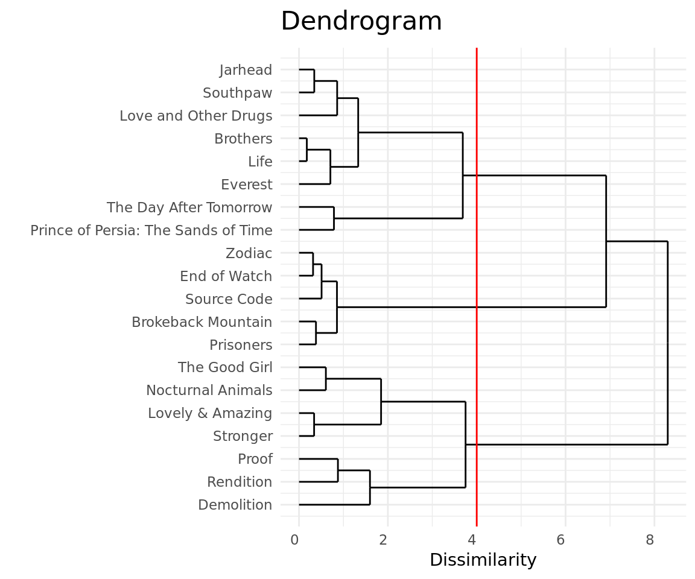

Jake Gyllenhaal's type of movies
Introduction
Exploratory data analysis on data from RottenTomatoes about actor Jake Gyllenhaal. The code used to mine the data here analyzed and the explanation on how to use it can be found on this report’s repository deste relatório.
- Entries that have no information about box office were ignored.
Data Overview
import_data("jake_gyllenhaal")
filmes <- read_imported_data()
filmes %>%
glimpse()## Observations: 20
## Variables: 5
## $ avaliacao <int> 92, 67, 72, 52, 73, 59, 82, 85, 92, 49, 35, 64, 47,...
## $ filme <chr> "Stronger", "Life", "Nocturnal Animals", "Demolitio...
## $ papel <chr> "Jeff Bauman", "David Jordan", "Tony HastingsEdward...
## $ bilheteria <dbl> 4.2, 30.2, 10.7, 1.7, 46.6, 42.4, 61.0, 39.1, 54.7,...
## $ ano <int> 2017, 2017, 2016, 2016, 2015, 2015, 2013, 2012, 201...Box Office
- Data refers to revenue collected inside the USA.
p <- filmes %>%
ggplot(aes(x = ano,
y = bilheteria,
text = paste("Movie:",filme,
"\nBox Office:",
bilheteria,"m",
"\nYear:",ano))) +
geom_point(size = 4, color = paleta[1]) +
labs(y = "Box Office (MM)", x = "Year of release")
ggplotly(p, tooltip = "text") %>%
layout(autosize = F)Among the movies where Jake acted one sets itself apart from others in terms of revenue: The movie “The Day After Tomorrow” released in 2004.
It’s possible to notice a downward trend in the Box Office of the movies where Jake acted after 2013.
filmes %>%
ggplot(aes(x = bilheteria)) +
geom_histogram(aes(y=(..count..)/sum(..count..)),binwidth = 10, boundary = 0,
fill = "grey", color = "black") +
geom_rug(size = .5) +
scale_x_continuous(breaks=seq(0,200,20)) +
labs(y = "Relative Frequency", x = "Box Office (MM)")We see a clear disparity between “The Day After Tomorrow” and the rest of the movies.
No values outside expected domain, e.g. negative values.
p <- filmes %>%
ggplot(aes(x = "",
y = bilheteria,
label = filme,
text = paste("Movie:",filme,
"\nBox Office:",
bilheteria,"m"))) +
geom_jitter(width = .05, alpha = .3, size = 3) +
labs(x = "", y="Box Office (MM)")
ggplotly(p, tooltip="text") %>%
layout(autosize = F)Separate movies in those whose Box Office is below 50 millions and those whose Box Office is above that seems a reasonable approach.
“The Day After Tomorrow” seems to form a group of its own. Which would give us 3 groups.
Rating
p <- filmes %>%
ggplot(aes(x = ano,
y = avaliacao,
text = paste("Movie:",filme,
"\nRating:",
avaliacao,
"\nYear:",ano))) +
geom_point(size = 4, color = paleta[1]) +
scale_y_continuous(limits = c(0, 100)) +
labs(y = "Rating RT", x = "Year of Release")
ggplotly(p, tooltip = "text") %>%
layout(autosize = F)- Between 2005 and 2010 Jake participated in a particular series of movies that did not please the critics.
- There doesn’t seem to exist a particularly clear tendency in the year of release.
filmes %>%
ggplot(aes(x = avaliacao)) +
geom_histogram(aes(y=(..count..)/sum(..count..)),binwidth = 10, boundary = 0,
fill = paleta[3], color = "black") +
geom_rug(size = .5) +
scale_x_continuous(breaks=seq(0,100,10)) +
labs(y = "Relative Frequency", x = "Rating RT")It’s possible to notice a considerable number of movies with ratings above 80.
No values outside expected domain, e.g. negative values.
p <- filmes %>%
ggplot(aes(x = "",
y = avaliacao,
text = paste(
"Filme:",filme,
"\nAvaliação:",avaliacao))) +
geom_jitter(width = .05, alpha = .3, size = 3) +
labs(x = "", y="Avaliação RT")
ggplotly(p, tooltip = "text") %>%
layout(autosize = F)- Intuitively three groups arise:
- The movies with ratings above 80
- The movies with ratings between 55 and 70
- The movies with ratings below 55
Hierarchical Clustering
One dimension
Box Office
agrupamento_h = filmes %>%
mutate(nome = paste0(filme, " (bil=", bilheteria, ")")) %>%
as.data.frame() %>%
column_to_rownames("filme") %>%
select(bilheteria) %>%
dist(method = "euclidian") %>%
hclust(method = "centroid")
ggdendrogram(agrupamento_h, rotate = T, size = 2, theme_dendro = F) +
labs(y = "Dissimilarity", x = "", title = "Dendrogram") +
geom_hline(aes(yintercept = c(20,30), color=c("4 grupos","3 grupos"))) +
scale_colour_manual(name="#Groups",
values=c("#56B4E9", "#FF9999"))- In terms of Dendrogram the separation in four and three groups seems appropriate, given that the increase in dissimilarity from 4 to 3 groups doesn’t seem to be substantial.
- Cut made for 4 groups
atribuicoes = get_grupos(agrupamento_h, num_grupos = 1:6)
atribuicoes = atribuicoes %>%
left_join(filmes, by = c("label" = "filme"))
atribuicoes %>%
ggplot(aes(x = "Movies", y = bilheteria, colour = grupo)) +
geom_jitter(width = .02, height = 0, size = 1.6, alpha = .6) +
facet_wrap(~ paste(k, " groups")) +
scale_color_brewer(palette = "Dark2") +
labs(y = "Box Office (MM)", x = "", title = "Grouping by Box Office") +
guides(color=guide_legend(title="group"))- The division in 4 groups seems more appropriate than the division in 3 groups.
- The movie cluster on the base of chart seems to require its own group (In the 4 groups division the aforementioned group would be the group 1).
k_escolhido = 4
m <- list(l = 220)
p <-atribuicoes %>%
filter(k == k_escolhido) %>%
ggplot(aes(x = reorder(label, bilheteria),
y = bilheteria,
colour = grupo,
text = paste(
"Movie:", reorder(label, bilheteria),
"\nRating:", bilheteria,
"\nGroup:", grupo))) +
geom_jitter(width = .02, height = 0, size = 3, alpha = .6) +
facet_wrap(~ paste(k, " groups")) +
scale_color_brewer(palette = "Dark2") +
labs(x = "", y = "Rating RT") +
guides(color=guide_legend(title="group")) +
coord_flip()
ggplotly(p,tooltip = "text") %>%
layout(autosize = F, margin = m)- The Day After Tomorrow demanded a group for itself, as expected.
Rating
agrupamento_h = filmes %>%
mutate(nome = paste0(filme, " (av=", avaliacao, ")")) %>%
as.data.frame() %>%
column_to_rownames("filme") %>%
select(avaliacao) %>%
dist(method = "euclidian") %>%
hclust(method = "ward.D")
ggdendrogram(agrupamento_h, rotate = T, size = 2, theme_dendro = F) +
labs(y = "Dissimilarity", x = "", title = "Dendrogram") +
geom_hline(aes(yintercept = 30),color="red")- In terms of Dendrogram the division in three groups seems the most appropriate, given that the increase in dissimilarity becomes substantial when we go from 3 to 2 groups.
atribuicoes = get_grupos(agrupamento_h, num_grupos = 1:6)
atribuicoes = atribuicoes %>%
left_join(filmes, by = c("label" = "filme"))
atribuicoes %>%
ggplot(aes(x = "Movies", y = avaliacao, colour = grupo)) +
geom_jitter(width = .02, height = 0, size = 1.6, alpha = .6) +
facet_wrap(~ paste(k, " groups")) +
scale_color_brewer(palette = "Dark2") +
guides(color=guide_legend(title="group")) +
labs(y = "Rating RT", x = "", title = "Grouping by Rating")- Visually the division in three groups seems appropriate in accordance with the dendrogram.
k_escolhido = 3
m <- list(l = 220)
p <-atribuicoes %>%
filter(k == k_escolhido) %>%
ggplot(aes(x = reorder(label, avaliacao),
y = avaliacao,
colour = grupo,
text = paste(
"Movie:", reorder(label, avaliacao),
"\nRating:", avaliacao,
"\nGroup:", grupo))) +
geom_jitter(width = .02, height = 0, size = 3, alpha = .6) +
facet_wrap(~ paste(k, " groups")) +
scale_color_brewer(palette = "Dark2") +
labs(x = "", y = "Rating RT") +
guides(color=guide_legend(title="group")) +
coord_flip()
ggplotly(p,tooltip = "text") %>%
layout(autosize = F, margin = m)- Arguably, Prince of Persia: The Sands of Time could demand a group of its own.
Two dimensions
How many groups should we choose?
agrupamento_h_2d = filmes %>%
mutate(bilheteria = log10(bilheteria)) %>%
mutate_at(vars("avaliacao", "bilheteria"), funs(scale)) %>%
column_to_rownames("filme") %>%
select("avaliacao", "bilheteria") %>%
dist(method = "euclidean") %>%
hclust(method = "ward.D")
ggdendrogram(agrupamento_h_2d, rotate = TRUE, theme_dendro = F) +
labs(y = "Dissimilarity", x = "", title = "Dendrogram") +
geom_hline(aes(yintercept = 4),color="red")
- Going from 4 to 3 groups represents little variation in terms of dissimilarity
- Going from 3 to 2 groups represents a relatively substantial increase in dissimilarity, therefore from 6 to 3 groups seems a good choice in terms of dendrogram.
filmes2 <- filmes %>%
mutate(bilheteria = log10(bilheteria))
plota_hclusts_2d(agrupamento_h_2d,
filmes2,
c("avaliacao", "bilheteria"),
linkage_method = "ward.D",
ks = 1:6,
palette = "Dark2") +
facet_wrap(~ paste(k, " groups")) +
scale_y_log10() +
guides(color=guide_legend(title="group")) +
labs(y = "Box Office", x = "Rating", title = "Grouping with two dimensions")- The choice of 5 groups seems appropriate, as it reflects matters of Box Office as matters of Ratings. We’ll choose 5 groups for the following reasons (Groups mentioned on the 5 groups division):
- The \(\color{magenta}{\text{4 best rated movies}}\) are very close to each other and suggest a group.
- The \(\color{#7C3F7C}{\text{3 movies of small Box Office and low ratings}}\) are very dissimilar the rest of the movies and suggest a group.
- The \(\color{#16A085}{\text{4 movies of small Box Office and high ratings}}\) are close to each other and suggest a group.
- The \(\color{green}{\text{2 movies of huge Box Office and very low ratings}}\) are very far from the rest of the movies and suggest a group.
- The \(\color{#CF5300}{\text{6 central/median movies in terms of Box Office/Rating}}\) are very close to each other and suggest a group.
atribuicoes = get_grupos(agrupamento_h_2d, num_grupos = 1:6)
atribuicoes = atribuicoes %>%
filter(k == 5) %>%
mutate(filme = label) %>%
left_join(filmes, by = "filme")
p <- atribuicoes %>%
ggplot(aes(x = avaliacao,
y = bilheteria,
colour = grupo,
text = paste(
"Movie:", filme,
"\nBox Office:", bilheteria,"m\n",
"Rating:", avaliacao))) +
geom_jitter(width = .02, height = 0, size = 3, alpha = .6) +
facet_wrap(~ paste(k, " groups")) +
scale_color_brewer(palette = "Dark2") +
scale_y_log10() +
guides(color=guide_legend(title="group")) +
labs(y = "Box Office", x = "Rating RT")
ggplotly(p, tooltip = "text") %>%
layout(autosize = F)What are the name of the groups?
\(\color{#16A085}{\text{Group 1 (Oddball):}}\) Movies overall well received by the public, which reflected on its low revenue. The name Oddball comes from the later interest on the movies from people who consider themselves eccentric not rarely to re-validate their sense of exclusivity.
\(\color{#CF5300}{\text{Group 2 (Matinee):}}\) Movies overall not so well received by the critics and more formulaic. In terms of box office most of them had low revenue but the movie paid itself. The name Matinee comes from the idea of that movies that did not perform that well or stopped being the hot topic for a long time occupying being aired by that time.
\(\color{#7C3F7C}{\text{Group 3 (Demolition of a budget):}}\) Movies overall poorly received by both critics and public, which reflected on its small Box Office and low ratings. The name of the group is a wordplay with the very small revenue rendered by the movies, which “demolished” the investment of those who betted in them.
\(\color{magenta}{\text{Grupo 4 (Broke Records and Awards):}}\) Movies acclaimed by critics and whose box office was either successful or at least decent. The movies in this group have a more serious tone, talking of serious matter that frequently create controversy (serial murders, non heterosexuality, terrorism..). The name of the group is a word play with the name of one of its movies and the sheer amount of prizes this particular movie won.
\(\color{green}{\text{Grupo 5 (BlockBusters):}}\) Movies in which Jack acted that the critics didn’t like that much but who collected a huge box office, with a revenue on the scale of hundreds of millions. The term BlockBuster is usually given to movies who attract crowds to the movie theaters, which is the case of the movies who belong to this group.
Movie-example of each group
\(\color{#16A085}{\text{Grupo 1 (Oddball):}}\)
- Stronger: Biographical movie about ‘Jeff Bauman’, victim of the Boston terrorist attack who lost both legs on the explosion. The film was acclaimed by the critics who complimented how well executed and moving the movie was, the movie was also praised for focusing on a story of overcoming instead of using the tragedy to do fear-mongering. The movie however was a complete failure in terms of box office.
\(\color{#CF5300}{\text{Grupo 2 (Matinee):}}\)
- Life: Movie in the genre spacial sci-fi, had a box office not that expressive and the critics were equally uninspired. Was considered by many well executed but little innovative.
\(\color{#7C3F7C}{\text{Grupo 3 (Demolition of a budget):}}\)
- Demolition: In this movie Jacks acts as a man back to work after losing his wife who finds comfort in the company of a telemarketing attendant who he meets when he complains about a vending machine. The movie was a failure in terms of box office as well as in terms of review. Critics pointed the movie script as the big problem, which was described as ‘pretending to be profound’ and anti-charismatic.
\(\color{magenta}{\text{Grupo 4 (Broke Records and Awards):}}\)
- Brokeback Mountain: Probably Jake Gyllenhaal’s best performance till now, this movie rendered Jake a Oscar nomination and raised a lot of controversy for containing a sex scene between two man. The Academy (responsible for choosing the Oscar winners) was accused of homophobia for not choosing this movie as the winner of Best Picture , still Brokeback Mountain won another 141 awards and 128 nominations according to IMDB. The movie was considered a success both in box office as in ratings.
\(\color{green}{\text{Grupo 5 (BlockBusters):}}\)
- Prince of Persia: The Sands of Time: Based on the game of same name, game which many still consider a reference in quality and innovation. The movie brought disappointed comments from both critics and fans who curiously didn’t fail to contribute to its box office.